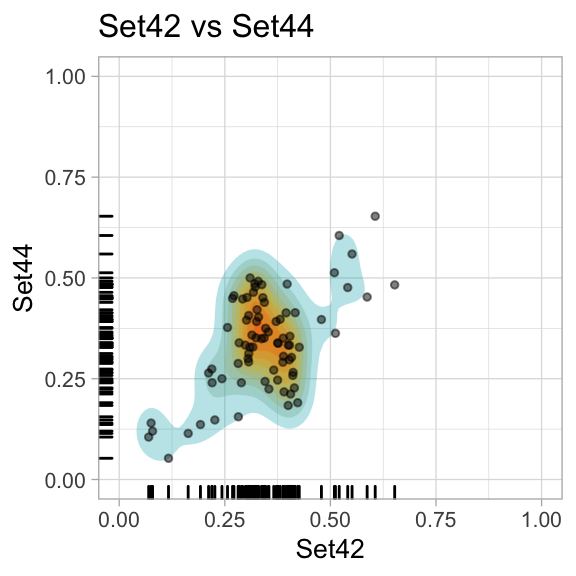
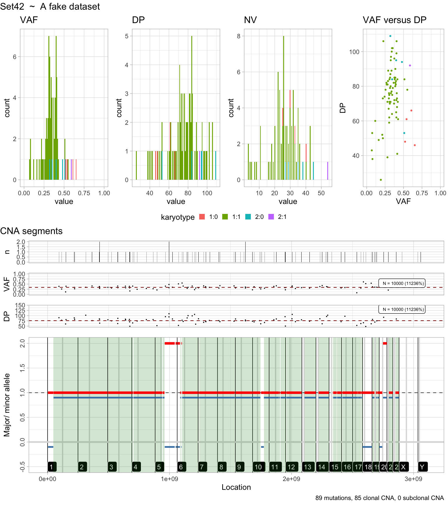
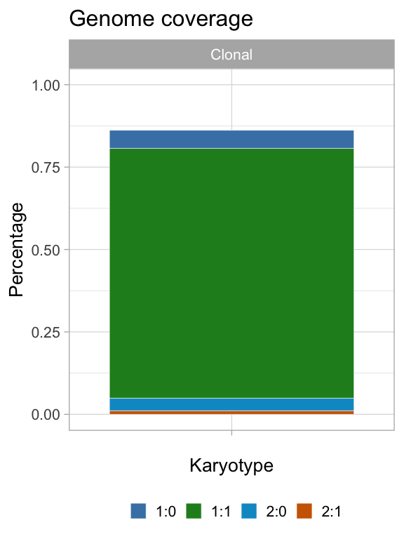

vignettes/Filtering.Rmd
Filtering.RmdThis vignette shows query, filter, re-shape and plot operations on the data stored inside a dataset of the mvMOBSTER package (S3 object class mbs_data).
We work with the x generated in the introductory vignette “Getting started”.
Getters functions take in input x and usually the list of samples to query (all by default), and ids to subset the call to a specific set of mutations.
# Number of mutations in the data, and number of samples
N(x)
#> [1] 81
S(x)
#> [1] 2
# VAF of the data
VAF(x)
#> # A tibble: 162 x 5
#> id sample variable value karyotype
#> <chr> <chr> <chr> <dbl> <chr>
#> 1 chr6:10048079:10048079:C:T Set42 VAF 0.509 2:0
#> 2 chr3:180176259:180176259:G:A Set42 VAF 0.314 1:1
#> 3 chr7:97655791:97655791:T:A Set42 VAF 0.0789 1:1
#> 4 chr5:113199069:113199069:T:C Set42 VAF 0.479 2:0
#> 5 chr19:4066877:4066877:G:T Set42 VAF 0.366 1:1
#> 6 chr3:147617725:147617725:T:C Set42 VAF 0.316 1:1
#> 7 chr9:82830945:82830945:G:T Set42 VAF 0.307 1:1
#> 8 chr3:145726355:145726355:G:A Set42 VAF 0.398 1:1
#> 9 chr14:32166895:32166895:A:C Set42 VAF 0.376 1:1
#> 10 chr12:130424880:130424880:G:A Set42 VAF 0.325 1:1
#> # … with 152 more rows
# VAF of one specific sample
VAF(x, samples = x$samples[1])
#> # A tibble: 81 x 5
#> id sample variable value karyotype
#> <chr> <chr> <chr> <dbl> <chr>
#> 1 chr6:10048079:10048079:C:T Set42 VAF 0.509 2:0
#> 2 chr3:180176259:180176259:G:A Set42 VAF 0.314 1:1
#> 3 chr7:97655791:97655791:T:A Set42 VAF 0.0789 1:1
#> 4 chr5:113199069:113199069:T:C Set42 VAF 0.479 2:0
#> 5 chr19:4066877:4066877:G:T Set42 VAF 0.366 1:1
#> 6 chr3:147617725:147617725:T:C Set42 VAF 0.316 1:1
#> 7 chr9:82830945:82830945:G:T Set42 VAF 0.307 1:1
#> 8 chr3:145726355:145726355:G:A Set42 VAF 0.398 1:1
#> 9 chr14:32166895:32166895:A:C Set42 VAF 0.376 1:1
#> 10 chr12:130424880:130424880:G:A Set42 VAF 0.325 1:1
#> # … with 71 more rows
# Same access for read counts
DP(x)
#> # A tibble: 162 x 5
#> id sample variable value karyotype
#> <chr> <chr> <chr> <dbl> <chr>
#> 1 chr6:10048079:10048079:C:T Set42 DP 53 2:0
#> 2 chr3:180176259:180176259:G:A Set42 DP 70 1:1
#> 3 chr7:97655791:97655791:T:A Set42 DP 38 1:1
#> 4 chr5:113199069:113199069:T:C Set42 DP 94 2:0
#> 5 chr19:4066877:4066877:G:T Set42 DP 82 1:1
#> 6 chr3:147617725:147617725:T:C Set42 DP 79 1:1
#> 7 chr9:82830945:82830945:G:T Set42 DP 75 1:1
#> 8 chr3:145726355:145726355:G:A Set42 DP 83 1:1
#> 9 chr14:32166895:32166895:A:C Set42 DP 85 1:1
#> 10 chr12:130424880:130424880:G:A Set42 DP 80 1:1
#> # … with 152 more rows
NV(x)
#> # A tibble: 162 x 5
#> id sample variable value karyotype
#> <chr> <chr> <chr> <dbl> <chr>
#> 1 chr6:10048079:10048079:C:T Set42 NV 27 2:0
#> 2 chr3:180176259:180176259:G:A Set42 NV 22 1:1
#> 3 chr7:97655791:97655791:T:A Set42 NV 3 1:1
#> 4 chr5:113199069:113199069:T:C Set42 NV 45 2:0
#> 5 chr19:4066877:4066877:G:T Set42 NV 30 1:1
#> 6 chr3:147617725:147617725:T:C Set42 NV 25 1:1
#> 7 chr9:82830945:82830945:G:T Set42 NV 23 1:1
#> 8 chr3:145726355:145726355:G:A Set42 NV 33 1:1
#> 9 chr14:32166895:32166895:A:C Set42 NV 32 1:1
#> 10 chr12:130424880:130424880:G:A Set42 NV 26 1:1
#> # … with 152 more rowsGetters can be easily assembled joining them by id, as done by function
print(Data_table)
#> function(x,
#> ids = keys(x),
#> samples = x$samples,
#> annotations = FALSE)
#> {
#> # Joined data tables
#> dt = full_join(
#> full_join(
#> VAF_table(x, ids, samples),
#> DP_table(x, ids, samples),
#> by = 'id'),
#> NV_table(x, ids, samples),
#> by = 'id'
#> )
#>
#> # All variables
#> an = Annotations(x, ids)
#>
#> full_join(dt, an, by = 'id')
#> }
#> <bytecode: 0x7fcd986f50c0>
#> <environment: namespace:mvmobster>
# All data table, with annotations as well
Data_table(x)
#> # A tibble: 81 x 10
#> id Set42.VAF Set44.VAF Set42.DP Set44.DP Set42.NV Set44.NV region
#> <chr> <dbl> <dbl> <dbl> <dbl> <dbl> <dbl> <chr>
#> 1 chr6… 0.509 0.513 53 39 27 20 inter…
#> 2 chr3… 0.314 0.358 70 67 22 24 inter…
#> 3 chr7… 0.0789 0.12 38 25 3 3 inter…
#> 4 chr5… 0.479 0.397 94 63 45 25 inter…
#> 5 chr1… 0.366 0.271 82 70 30 19 upstr…
#> 6 chr3… 0.316 0.328 79 67 25 22 inter…
#> 7 chr9… 0.307 0.312 75 64 23 20 inter…
#> 8 chr3… 0.398 0.485 83 66 33 32 inter…
#> 9 chr1… 0.376 0.338 85 77 32 26 intro…
#> 10 chr1… 0.325 0.392 80 74 26 29 inter…
#> # … with 71 more rows, and 2 more variables: gene <chr>, patient <chr>The basic S3 plot function returns a list for every pair of input samples. If there is one sample, a histogram is plotted.

A report function visualises all the data available for a sample.
plot_sample(x, x$samples[1])
#> Warning: Removed 2 rows containing missing values (geom_bar).
#> Warning: Removed 8 rows containing missing values (geom_bar).
#> Warning: Removed 8 rows containing missing values (geom_bar).
The CNAqc objects generated when data have been loaded, are available inside x, and can be processed wih CNAqc functions.
